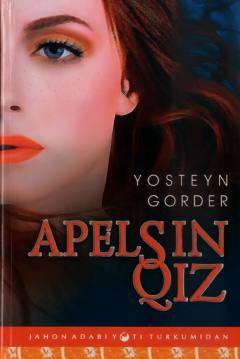

AQVafot etgan otaning farzandiga qoldirgan ta’sirli maktubi va hayotiy falsafasi.
Vafot etgan otaning o‘n bir yil o‘tib farzandiga qoldirgan maktubi orqali hayot, muhabbat va insoniy muammolar haqida hikoya qilinadi. Asar ota va o‘g‘il o‘rtasidagi ma’naviy bog‘liqlikni ochib beruvchi ta’sirli qissadir.